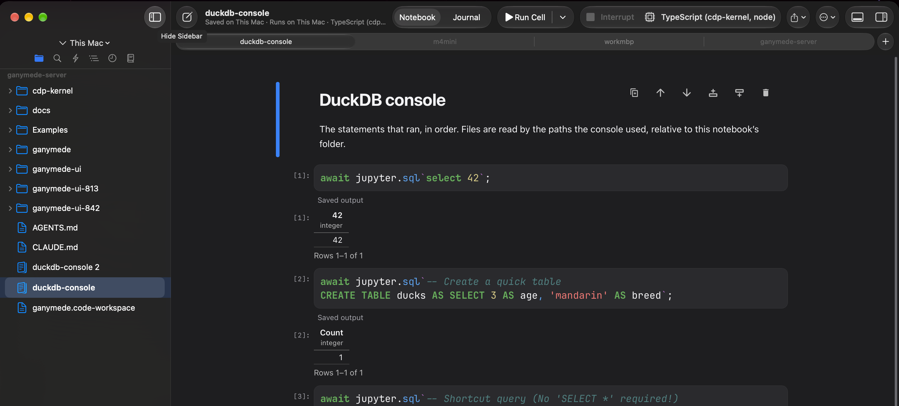

Ganymede for Mac, today
v0.17.1, the screenshot from this thread

1
2
3
4
5
1
A crowded toolbar.
Eleven controls and a two-line title that gets cut off. Every control has the same weight, so nothing leads.
2
Flat, equal tabs.
AppKit's tab bar: grey, same width, no icons, no kernel state. Notebooks and machine windows look alike.
3
A sidebar that doesn't float.
macOS 26 sidebars are inset glass panels. This one is a flat column with a row of tiny icons on top.
4
Jupyter, not Mac.
[1]:
prompts, a "Saved output" label, a bare blue bar for the selected cell, floating cell icons.
5
No rhythm.
Cells, outputs and labels sit at nearly the same spacing, so the page reads as one block. Output tables float without a frame.
Recommended
A · Tahoe native
Built from macOS 26 parts: floating glass sidebar, grouped toolbar capsules, Safari-style tab pills with kernel icons. Cells become cards with a run button in the margin. Character comes from a Ganymede accent and real spacing, not decoration.
Pro tool
B · Workbench
Xcode and Nova lineage: editor tabs joined to the page, an activity display in the toolbar, a status bar, a gutter with run timing. Dense on purpose, with a tinted dark theme and an amber run color.
Writing first
C · Document
Notes and Pages lineage: tabs move into a compact toolbar, the sidebar hides by default, prose sets in a serif, and cell chrome appears only on hover. The notebook reads like a finished document.